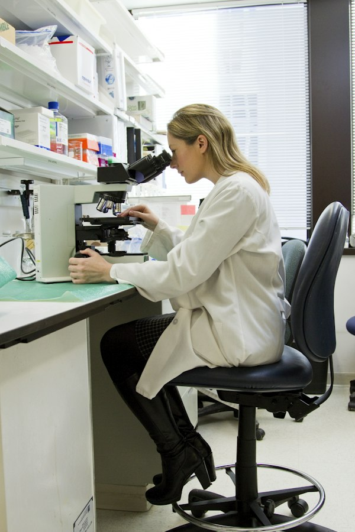
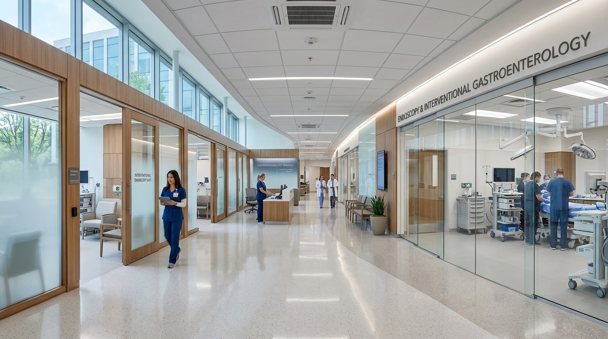

EVIDENCE-BASED GASTROINTESTINAL SERVICES & PROCEDURES.
From painless preventative cancer screenings and high-definition therapeutic endoscopy to multidisciplinary IBS protocols and liver elastography, explore our specialized digestive programs.
OUR SPECIALIZED PROCEDURES & CLINICAL PROGRAMS
Select a clinical sub-specialty or browse our comprehensive gastrointestinal procedural catalog.

Gastroenterology Consultation
In-depth clinical evaluations for persistent abdominal pain, chronic bloating, unexplained weight fluctuations, altered bowel motility, and diagnostic triage.
- • 45-Minute unhurried physician evaluation
- • Complete medication and dietary interaction review
- • Direct diagnostic laboratory and imaging orders

Upper Endoscopy (EGD)
High-definition visual examination of the esophagus, stomach, and duodenum. Indicated for persistent heartburn, difficulty swallowing, refractory nausea, and ulcers.
- • Monitored propofol anesthesia for zero discomfort
- • Micro-biopsies for H. pylori, celiac, and eosinophils
- • 12 to 15-minute gentle outpatient procedure

Screening & Diagnostic Colonoscopy
The undisputed gold standard for colorectal cancer prevention. Facilitates immediate, painless identification and complete electrocautery resection of precancerous polyps.
- • 99.8% Adenoma detection rate with AI assistance
- • Gentle, low-volume split-dose bowel preparations
- • 100% In-network preventative coverage under ACA

IBS & Motility Management Program
Multi-modal therapeutic regimens combining Rome IV phenotypic subtyping, visceral hypersensitivity modulation, microbiome therapy, and gut-directed counseling.
- • Subtyping: IBS-C (Constipation), IBS-D, IBS-Mixed
- • Board-certified GI nutrition & low-FODMAP guidance
- • Neuromodulator & gut motility pharmacological care

Acid Reflux & GERD Care Center
Advanced physiological and endoscopic diagnostics for persistent heartburn, acid regurgitation, hiatal hernia, chronic coughing, and non-cardiac chest discomfort.
- • 48-Hour Bravo™ wireless pH capsule monitoring
- • High-resolution esophageal motility manometry
- • Minimally invasive anti-reflux treatment planning

Digestive Biomarkers & Stool Lab
Advanced non-invasive clinical biomarker diagnostics including fecal calprotectin for IBD differentiation, pancreatic elastase, celiac serology, and H. pylori breath assays.
- • Quantitative fecal calprotectin & lactoferrin
- • Multiplex stool PCR for enteric pathogen detection
- • Fast 48-hour electronic portal report delivery

SIBO Hydrogen & Methane Breath Lab
Non-invasive diagnostic testing using the gold-standard Quintron gas chromatography analyzer to identify Small Intestinal Bacterial Overgrowth and intestinal methanogen overgrowth (IMO).
- • Simultaneous H2, CH4, and CO2 gas tracking
- • Lactulose and glucose standardized substrate panels
- • Clear dietary prep instructions & targeted therapy

Barrett's Esophagus Ablation (Barrx™)
Specialized endoscopic surveillance and radiofrequency ablation (RFA) for precancerous dysplasia resulting from chronic acid reflux, preserving esophageal lining integrity.
- • Wide-area transepithelial optical mapping
- • Barrx™ 360 Express & 90 RFA technology
- • Over 90% complete eradication of dysplastic tissue

Endoscopic Mucosal Resection (EMR)
Surgical-grade outpatient endoscopic removal of large polyps (greater than 20mm), flat sessile lesions, and early superficial mucosal tumors without open abdominal surgery.
- • Submucosal fluid lifting & high-frequency snare resection
- • Hemostatic clipping for immediate defect closure
- • Same-day discharge with 99.4% organ preservation
Clinical GI Medical Nutrition & Dietetics
Personalized dietary protocols led by registered GI dietitians specializing in low-FODMAP reintroduction, celiac gluten-free transitions, eosinophilic esophagitis, and IBD anti-inflammatory meal planning.
- • 3-Phase structured Low-FODMAP reintroduction
- • Micronutrient malabsorption screening (B12, Iron, D)
- • Telehealth dietary visits available across Washington
Non-Invasive Liver Health & FibroScan®
Painless, non-invasive transient elastography to accurately measure liver fibrosis and steatosis (fatty liver / MASLD) in under 10 minutes without needles or surgical liver biopsies.
- • Immediate numeric liver stiffness measurement (kPa)
- • Controlled Attenuation Parameter (CAP) for fat quantification
- • Zero recovery time; resume normal activities instantly

Capsule Endoscopy (PillCam™ SB3)
Swallowed vitamin-sized wireless camera capsule capturing over 50,000 high-resolution images as it travels through the small intestine, detecting occult bleeding, Crohn's, and vascular lesions.
- • Visualizes the 20-foot small intestine beyond standard scope reach
- • Wearable sensor belt allows normal daily routine during test
- • Natural, disposable capsule passage within 24–48 hours
ENDOSCOPY TECHNOLOGY ENGINEERED FOR COMFORT & PRECISION
We invest in premier hospital-grade imaging towers, AI detection algorithms, and gentle warm CO2 insufflation to deliver painless procedures with industry-leading diagnostic yield.
Olympus EVIS X1 4K
Ultra-high-definition imaging with Narrow Band Imaging (NBI) and TXI provides micro-contrast of capillary networks, revealing early dysplastic lesions that ordinary scopes miss.
AI CADe Polyp Detection
Integrated real-time neural network algorithms analyze mucosal surface topology at 60 fps, providing instant visual bounding boxes over subtle flat adenomas for 99.8% sensitivity.
Warm CO2 Insufflation
Unlike conventional room air that causes post-procedure cramping, medical-grade warm CO2 is absorbed 150 times faster by tissue, leaving you feeling comfortable and bloat-free.
Propofol MAC Sedation
Monitored Anesthesia Care administered exclusively by board-certified anesthesiologists ensures a peaceful, dreamless sleep with zero pain and a rapid, nausea-free awakening in 10 minutes.
WHAT TO EXPECT: YOUR STEP-BY-STEP PROCEDURE JOURNEY
From preliminary intake to same-day discharge and nurse check-in, here is how our clinical team ensures seamless care.
Pre-Procedure Clinical Triage
Our registered triage nurse conducts a 15-minute phone review of your medical history, current anticoagulants or diabetes medications, and verifies insurance prior authorization.
Timeline: 7 to 10 days priorGentle Split-Dose Preparation
You receive our low-volume split-dose regimen (or pill-based Sutab option). Drinking half the evening before and half the morning of ensures pristine colon mucosal visibility.
Timeline: 24 to 12 hours priorPrivate Suite Arrival & Check-In
Arrive with your adult companion escort. You will be settled into a private pre-op bay equipped with heated blankets, cardiac telemetry, and meet your physician and anesthesiologist.
Timeline: 45 mins before procedureGentle 15–25 Minute Procedure
You fall peacefully asleep under gentle monitored anesthesia. Your gastroenterologist performs high-definition mucosal imaging, removes any polyps, and takes targeted biopsies.
Timeline: 15 to 30 mins active durationDirect Review & Photo Report
You wake up alert and clear-headed. Your gastroenterologist meets with you and your escort to review color high-definition procedural photographs and immediate preliminary findings.
Timeline: 20 to 30 mins recoveryPortal Histology & Follow-Up
Our triage team calls you the next morning to ensure complete recovery. Any pathology or histology biopsy reports are published to your secure patient portal within 48 to 72 hours.
Timeline: 24 to 72 hours postDOWNLOADABLE INSTRUCTIONS & PROTOCOLS
High-quality procedural preparation is the single most critical factor for accurate diagnosis. Access our vetted instructions below.
Colonoscopy Split-Dose Preparation Protocol
Clear liquid diet guidelines, split-dose hydration timelines, and medication holds (PDF, 2 pages).
Upper Endoscopy (EGD) Fasting Instructions
8-hour solid food restriction, 2-hour clear liquid cutoff, and morning blood pressure meds advice (PDF).
SIBO Hydrogen Breath Test 24-Hour Diet Protocol
Low-fermentation meal guidelines, antibiotic washout periods, and morning fasting instructions (PDF).
Low-FODMAP Reintroduction Clinical Roadmap
3-Phase elimination, systematic challenge schedule, and long-term gut microbiome diversity plan (PDF).
WHICH PROCEDURE IS RIGHT FOR YOUR SYMPTOMS?
A clear comparative summary of clinical indications, anesthesia levels, typical duration, and preparation requirements.
| Procedure | Primary Clinical Indications | Anesthesia / Comfort | Duration | Preparation Requirements | Insurance Status |
|---|---|---|---|---|---|
| Screening Colonoscopy | Preventative colon screening (age 45+), polyps, rectal bleeding, family history | Propofol Sedation (MAC) | 20–30 Mins | Clear liquid diet + split-dose bowel prep | 100% ACA Covered |
| Upper Endoscopy (EGD) | GERD, acid reflux, dysphagia, nausea, epigastric pain, suspected ulcer | Propofol Sedation (MAC) | 12–15 Mins | Fasting 8 hours prior (no food or liquids) | In-Network Covered |
| SIBO Hydrogen Breath Test | Post-meal bloating, chronic gas, distension, IBS-D, food intolerances | Non-Invasive / None | 2.5 Hours | 1-Day low-fermentation prep diet + fasting | In-Network Covered |
| Capsule Endoscopy (PillCam™) | Obscure gastrointestinal bleeding, Crohn's surveillance, small bowel tumors | Swallowed Camera Pill | 8 Hours (Wearable) | Clear liquid fasting 12 hours prior | Prior Auth Covered |
| Liver FibroScan® Elastography | Fatty liver disease (MASLD/MASH), elevated AST/ALT, hepatitis, fibrosis grading | Ultrasound Probe / None | 10 Mins | Fasting 3 hours prior to scan | In-Network Covered |
ZERO-SURPRISE-BILLING & RAPID INSURANCE PRE-AUTHORIZATION
Under the federal Affordable Care Act (ACA), preventative screening colonoscopies are covered at 100% with $0 copay or deductible by virtually all commercial insurance carriers, Medicare, and Medicaid.
COMMON QUESTIONS ABOUT OUR SERVICES & PROCEDURES
Clear, physician-vetted answers to common questions about sedation, bowel prep, recovery, and appointment scheduling.
EXPERIENCE WORLD-CLASS DIGESTIVE MEDICINE.
Whether you are due for a routine screening colonoscopy or need expert guidance for complex gastrointestinal symptoms, our board-certified specialists are here for you.